Rebobinage de moteurs électriques, maintenance industrielle, installation et dépannage. Des solutions fiables pour vos équipements dans le secteur pétrolier, minier et industriel.
Interventions sur site ou en atelier, pour les entreprises et les particuliers de Pointe-Noire et alentours.
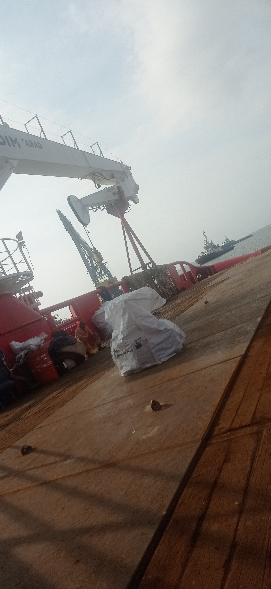
RebobinageRebobinage complet de moteurs électriques triphasés et monophasés. Diagnostic, démontage, bobinage, imprégnation et tests de mise en marche.
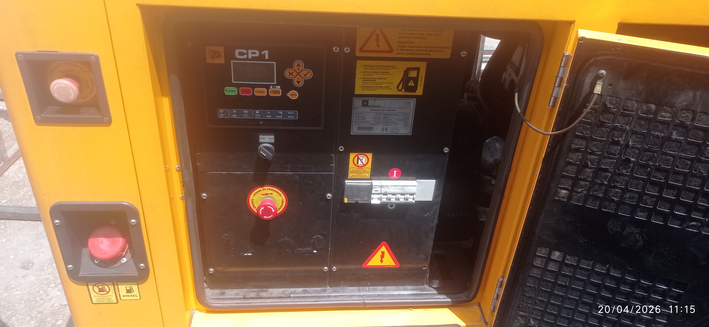
InstallationInstallation de tableaux de distribution, câblage industriel, raccordement de machines et équipements. Travaux conformes aux normes en vigueur.
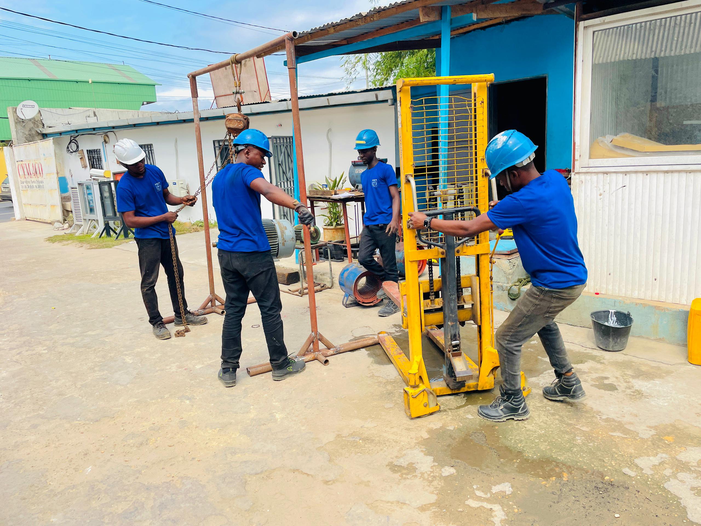
MaintenanceProgrammes de maintenance préventive pour groupes électrogènes, transformateurs et équipements électriques industriels. Fiches de maintenance détaillées.
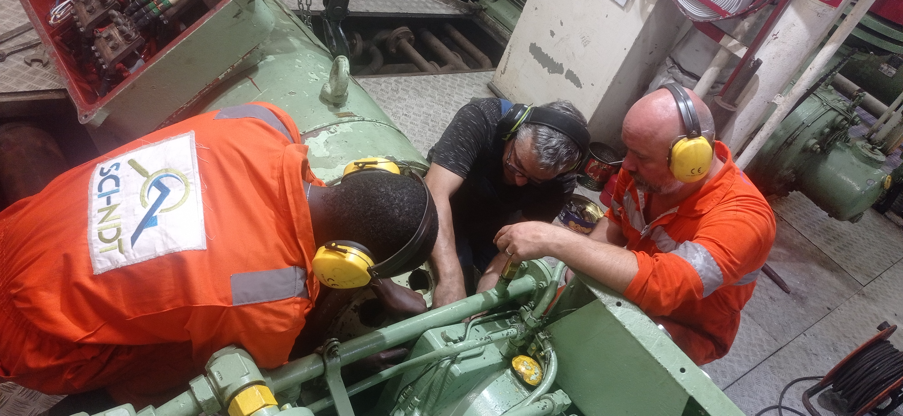
DépannageLocalisation rapide des pannes électriques et mécaniques. Intervention d'urgence pour limiter l'arrêt de production.
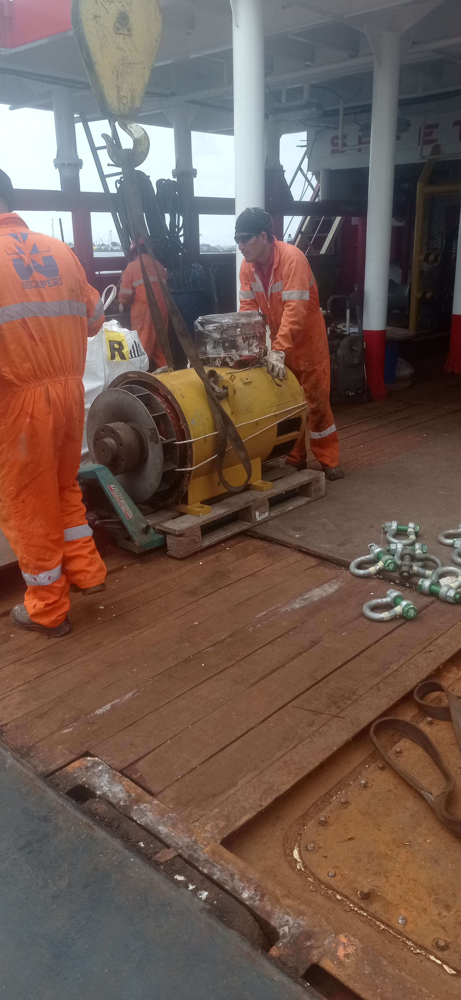
CâblageConception et câblage de systèmes de démarrage étoile-triangle et démarreurs progressifs pour moteurs industriels.
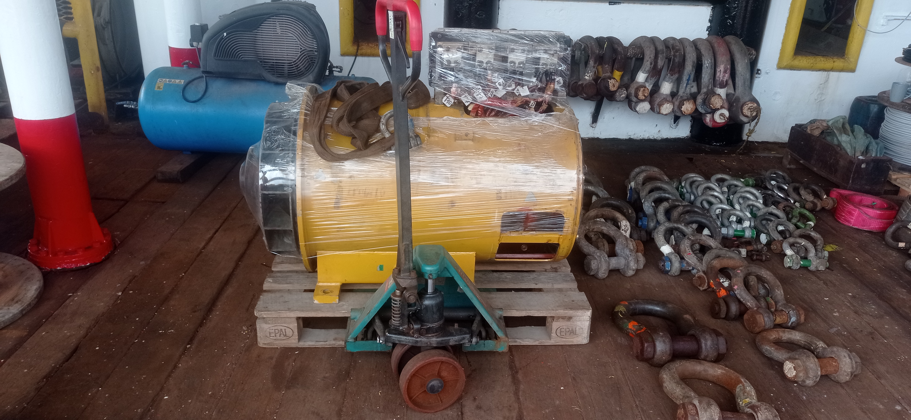
RéseauxTravaux sur réseaux de distribution électrique, transformateurs HTA/BT, armoires de compensation et équipements associés.
Moteurs asynchrones, transformateurs, armoires — les équipements sur lesquels j'interviens au quotidien.
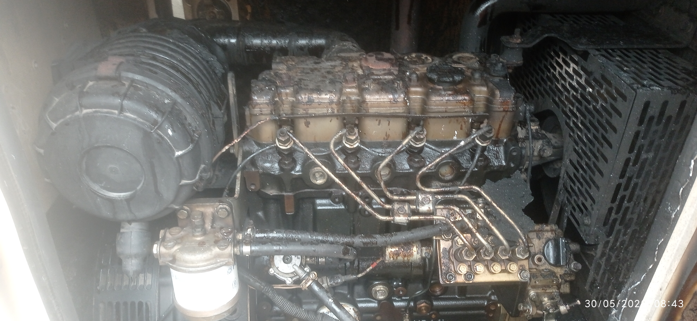
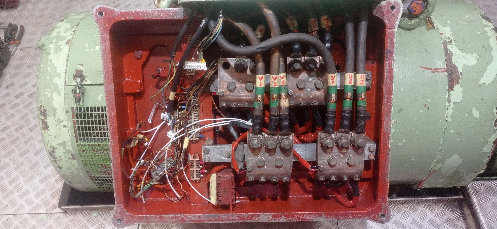
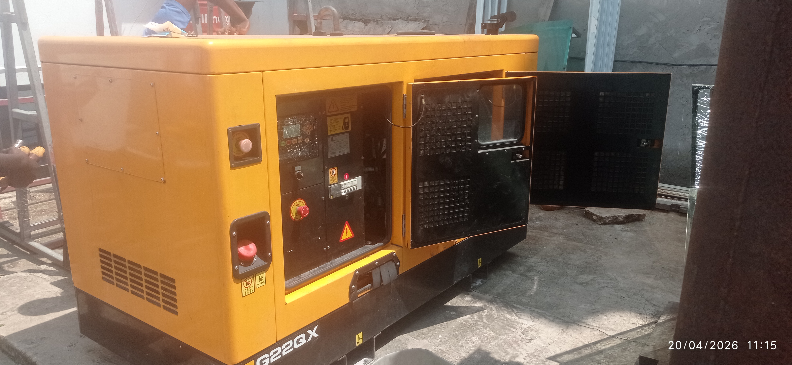
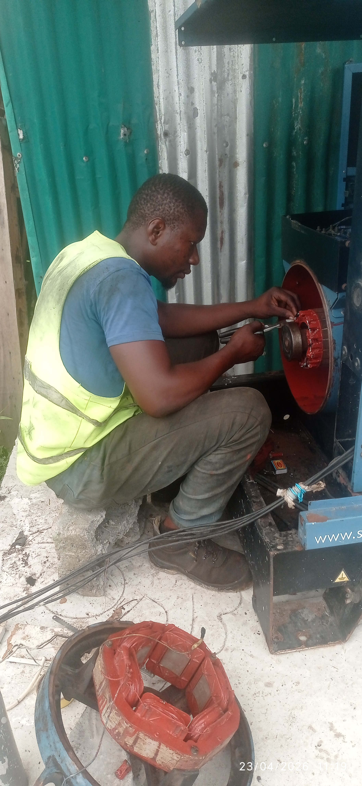
Technicien électricien avec plus de 6 ans d'expérience acquise auprès d'entreprises industrielles à Pointe-Noire — pétrole, télécommunications, construction. Formation certifiée en électrotechnique et rebobinage de moteurs.
J'ai travaillé avec des sociétés comme S.A.T Congo, Airtel Congo, SCI-NDT et SOCO SERVICE — des environnements exigeants qui forment les meilleurs réflexes.
Appuyez sur un secteur pour découvrir les équipements, les risques et les types d'intervention que je réalise dans cette filière.
Le secteur pétrolier est le principal moteur économique de Pointe-Noire. Les installations de forage, de raffinage et de pompage font tourner en permanence des centaines de moteurs électriques et de transformateurs soumis à des conditions extrêmes — chaleur, humidité, vibrations, poussière et gaz corrosifs. Une panne non anticipée peut stopper toute une chaîne de production et engendrer des pertes considérables. La maintenance électrique rigoureuse n'est pas une option : c'est une obligation de sécurité.
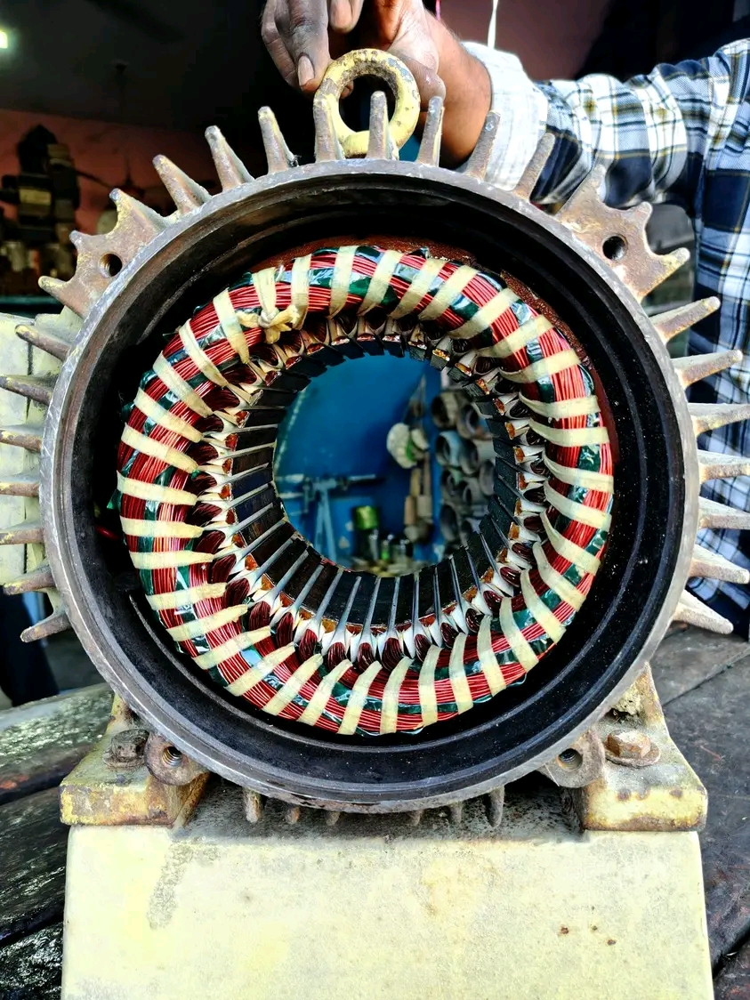
L'industrie extractive utilise des moteurs électriques parmi les plus puissants et les plus sollicités qui existent. Concasseurs, convoyeurs, broyeurs, pompes de drainage — tous fonctionnent souvent 24h/24 dans des environnements poussiéreux, humides et mécaniquement agressifs. Le moindre arrêt non planifié sur une carrière arrête toute la chaîne de production en aval. La fiabilité électrique y est donc absolument critique.
Le secteur du bâtiment et des travaux publics est un gros consommateur d'énergie électrique, tant sur chantier (grues, élévateurs, malaxeurs, compresseurs) que dans les bâtiments livrés (distribution, éclairage, climatisation). À Pointe-Noire, la forte activité de construction crée une demande permanente d'électriciens qualifiés capables d'intervenir en phase chantier comme en maintenance post-livraison.
Les opérateurs de télécommunications (comme Airtel Congo, avec lequel j'ai directement collaboré) exploitent des centaines de stations relais et de centres techniques dont la continuité électrique est vitale. Une coupure de courant non gérée, c'est un réseau mobile qui tombe dans une zone entière. La fiabilité des groupes électrogènes de secours, des redresseurs et des systèmes d'alimentation sans interruption (ASI/UPS) est donc une priorité absolue.
Les unités de transformation alimentaire — boulangeries industrielles, huileries, brasseries, unités de congélation — reposent entièrement sur des moteurs électriques fiables. Malaxeurs, convoyeurs, pompes de transfert, compresseurs de chambres froides : chaque équipement doit fonctionner en continu. Une panne en chambre froide peut signifier la perte de plusieurs tonnes de marchandises en quelques heures.
Les hôtels et résidences haut de gamme de Pointe-Noire — souvent liés au secteur pétrolier — ont des exigences électriques élevées : climatisation centralisée, pompes de piscine, ascenseurs, éclairage de qualité, et surtout une continuité de service absolue. Un groupe électrogène qui ne démarre pas pendant une coupure SNEC, c'est une hôtellerie paralysée et des clients mécontents.
Les ateliers de production — imprimeries offset, ateliers de menuiserie, de métallurgie, de couture industrielle — font tourner des machines-outils dont les moteurs travaillent en cycles courts intensifs. Démarrages fréquents, charges variables, environnement poussiéreux ou chargé en solvants : c'est l'une des conditions les plus agressives pour un moteur électrique.
Les petites et moyennes entreprises de Pointe-Noire — commerces, supermarchés, garages, cliniques, stations-service — ont souvent des besoins électriques non couverts faute d'un prestataire disponible et abordable. Elles subissent les coupures SNEC, l'usure des équipements et les pannes sans avoir forcément les moyens de grandes sociétés d'ingénierie. C'est exactement là que j'interviens : réactivité, proximité, prix justes.
Devis gratuit et sans engagement. Je réponds sous 24h.